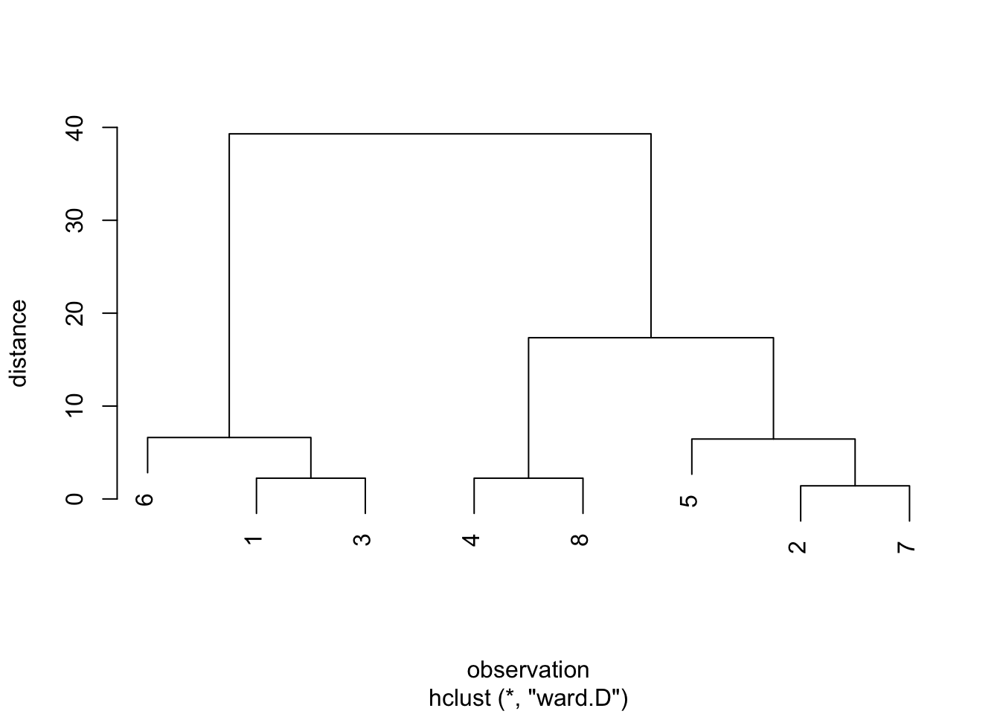

Chapter 6 계층적 군집방법
계층적 군집방법에는 집괴법과 분리법이 있으나 주로 집괴법이 사용된다. 본 장에서는 집괴법으로는 연결법을 소개하고, 분리법으로는 다이아나(DIANA)를 소개한다.
6.1 필요 R 패키지 설치
본 장에서 필요한 R 패키지들은 아래와 같다.
| package | version |
|---|---|
| tidyverse | 1.2.1 |
| stats | 3.5.1 |
| corrr | 0.3.0 |
| cluster | 2.0.7-1 |
6.2 군집 간 거리척도 및 연결법
계층적 군집방법에서는 유사한 객체들을 군집으로 묶고, 다시 유사한 군집을 새로운 군집으로 묶는 등 단계적 절차를 사용한다. 이를 위해서는 군집 간의 유사성 척도 혹은 비유사성 척도가 필요하다.
- \(C_i\): \(i\)번째 군집(군집 \(i\))
- \(|C_i|\): 군집 \(i\)의 객체수
- \(\mathbf{c}_i = \left( \bar{x}_1^{(i)}, \bar{x}_2^{(i)}, \cdots, \bar{x}_p^{(i)} \right)\): 군집 \(i\)의 중심좌표(centroid) (\(\bar{x}_a^{(i)} = \frac{1}{|C_i|} \sum_{j \in C_i} x_{aj}\))
- \(d(u, v) = d(\mathbf{x}_u, \mathbf{x}_v)\): 객체 \(u\)와 객체 \(v\)의 거리(또는 비유사성 척도)
- \(D(C_i, C_j)\): 군집 \(i\)와 군집 \(j\)의 거리(또는 비유사성 척도)
군집과 군집 간의 거리척도를 평가하는 방법에 따라 다양한 연결법(linkage method)이 존재한다. 아래에 대표적인 연결법과 군집 간 거리척도를 소개한다.
| 연결법 | 군집거리 \(D(C_i, C_j)\) |
|---|---|
| 단일연결법(single linkage method) | \(\min_{u \in C_i, \, v \in C_j} d(u, v)\) |
| 완전연결법(complete linkage method) | \(\max_{u \in C_i, \, v \in C_j} d(u, v)\) |
| 평균연결법(average linkage method) | \(\frac{1}{|C_i||C_j|} \sum_{u \in C_i, \, v \in C_j} d(u, v)\) |
| 중심연결법(centroid linkage method) | \(d(\mathbf{c}_i, \mathbf{c}_j)\) |
6.3 연결법의 군집 알고리즘
6.3.1 기본 R 스크립트
train_df <- tibble(
id = c(1:10),
x1 = c(6, 8, 14, 11, 15, 7, 13, 5, 3, 3),
x2 = c(14,13, 6, 8, 7, 15, 6, 4, 3, 2)
)
knitr::kable(train_df, booktabs = TRUE,
align = c('r', 'r', 'r'),
col.names = c('객체번호', 'PC 경력(년, $x_1$)', '사용시간(시간, $x_2$)'),
caption = 'PC 사용자 데이터')| 객체번호 | PC 경력(년, \(x_1\)) | 사용시간(시간, \(x_2\)) |
|---|---|---|
| 1 | 6 | 14 |
| 2 | 8 | 13 |
| 3 | 14 | 6 |
| 4 | 11 | 8 |
| 5 | 15 | 7 |
| 6 | 7 | 15 |
| 7 | 13 | 6 |
| 8 | 5 | 4 |
| 9 | 3 | 3 |
| 10 | 3 | 2 |
theme_set(theme_gray(base_family='NanumGothic'))
ggplot(train_df, aes(x = x1, y = x2)) +
geom_text(aes(label = id)) +
xlab("PC 경력") +
ylab("사용시간")
Figure 6.1: PC 사용자 데이터
Table 6.2는 10명의 사람(객체)에 대한 PC 사용경력과 주당 PC 사용시간을 나타낸 것이다. 각 객체가 두 변수로 이루어져 있으며, Figure 6.1에서 보는 바와 같이 세 개의 군집({1, 2, 6}, {3, 4, 5, 7}, {8, 9, 10})으로 이루어져 있다고 볼 수 있다.
본 장에서 평균연결법에 의한 군집화 과정을 살펴보기로 하자. 우선 R 패키지를 이용해서 간단하게 군집해를 구하는 과정은 아래와 같다.
stats패키지의 함수dist를 이용하여 객체간 거리를 계산한다.- 1에서 얻은 거리 행렬을
stats패키지의hclust함수에 입력하여 데이터 군집을 분석한다. 이 때, 파라미터method의 값을 “average”로 설정하면 평균연결법을 이용한다.
dist(train_df[, -1]) %>%
hclust(method = "average") %>%
plot(
main = NULL,
ylab = "distance",
xlab = "observation"
)
Figure 6.2: PC 사용자 데이터에 대한 평균연결법 덴드로그램
6.3.2 연결법 군집 알고리즘
각 연결법들은 군집간 유사성 척도 평가 방법이 다를 뿐, 군집화를 위한 알고리즘은 동일하게 아래와 같이 진행된다.
- 단계0: 초기화
- 연결법을 선정한다.
- 각 객체를 하나의 군집으로 간주한다.
- \(k \leftarrow n\)
- 단계1: 군집
- 현재의 군집결과에 있는 모든 군집 간의 쌍에 대하여 \(D(C_i, C_j)\)를 산출하여, 이 중 최소가 되는 군집 \(i\)와 \(j\)를 묶어 하나의 군집으로 만든 후 군집결과를 수정한다.
- \(k \leftarrow k - 1\)
- 단계2: \(k = 1\)이면 Stop, 그렇지 않으면 단계 1을 반복한다.
단계1은 객체 수 \(n\)만큼 반복된다.
iteration <- vector("list", length = nrow(train_df))임의의 군집해에 대하여, 단계1을 수행하는 함수를 아래와 같이 구현해보자. 아래 함수 merge_cluster는 아래와 같은 두 개의 입력변수를 사용한다.
df: 객체 데이터 프레임. 열 이름이id인 열은 객체번호를 나타내어, 객체간 거리 계산에 포함하지 않는다.cluster_label: 두 개의 열로 이루어진 데이터 프레임. 열id는 객체번호를 나타내며, 열cluster는 군집 이름을 나타낸다. 하나의 객체는 하나의 군집에만 속할 수 있으나, 하나의 군집은 여러 개의 객체를 포함할 수 있다.
함수 수행 결과, 아래와 같은 세 개의 원소를 지닌 리스트를 리턴한다.
cluster_dist: 군집 간 거리를 나타낸 데이터 프레임. 평균연결법에 기반한 거리.closest_clusters: 입력된 군집해 내에서 가장 가까운 두 군집을 나타낸 데이터 프레임. 두 열item1과item2는 각각 군집 이름을 나타내며,distance는 해당 두 군집간의 거리를 나타낸다.new_cluster_label:closest_clusters에 포함된 두 군집을 하나로 묶어 새로운 군집을 만든 후 얻어진 군집해.
merge_cluster <- function(df, cluster_label) {
# 군집간 거리 계산한다. - 유클리드 거리 및 평균연결법 기반
cluster_dist <- dist(subset(df, select = -id), upper = TRUE) %>%
broom::tidy() %>%
inner_join(
cluster_label %>% rename(
item1 = id, cluster1 = cluster
)) %>%
inner_join(
cluster_label %>% rename(
item2 = id, cluster2 = cluster
)) %>%
filter(cluster1 != cluster2) %>%
group_by(cluster1, cluster2) %>%
summarize(distance = mean(distance)) %>%
ungroup()
# 서로 가장 가깝게 위치하는 두 군집을 찾는다.
closest_clusters <- cluster_dist %>%
arrange(distance) %>%
slice(1)
# 군집해를 업데이트한다.
cluster_label[
cluster_label$cluster %in% (
closest_clusters[, c("cluster1", "cluster2")] %>% unlist()
),
"cluster"
] <- paste(
closest_clusters[, c("cluster1", "cluster2")] %>% unlist(),
collapse = ","
)
list(cluster_dist = cluster_dist,
closest_clusters = closest_clusters,
new_cluster_label = cluster_label)
}우선 단계 0에서 얻어지는 군집해에 대한 데이터를 아래와 같이 생성한다.
init_cluster <- tibble(
id = train_df$id,
cluster = as.character(1:nrow(train_df))
)
print(unique(init_cluster$cluster))## [1] "1" "2" "3" "4" "5" "6" "7" "8" "9" "10"k <- length(unique(init_cluster$cluster))
print(k)## [1] 10위와 같이, 초기 군집해에서 군집 수는 전체 객체수와 같은 10개이다.
위 초기해로부터 단계1을 아래와 같이 수행해보자.
iteration[[1]] <- merge_cluster(train_df, init_cluster)## Joining, by = "item1"## Joining, by = "item2"찾아진 가장 가까운 두 군집은 아래와 같다.
iteration[[1]]$closest_cluster## # A tibble: 1 x 3
## cluster1 cluster2 distance
## <chr> <chr> <dbl>
## 1 10 9 1위 두 군집을 하나로 묶은 새로운 군집해는 아래와 같다.
iteration[[1]]$new_cluster_label## # A tibble: 10 x 2
## id cluster
## <int> <chr>
## 1 1 1
## 2 2 2
## 3 3 3
## 4 4 4
## 5 5 5
## 6 6 6
## 7 7 7
## 8 8 8
## 9 9 10,9
## 10 10 10,9위 새로운 군집해의 군집 수는 9이다. 이는 아직 1보다 크므로, 새로 얻어진 군집해로부터 단계 1을 반복한다.
iteration[[2]] <- merge_cluster(
train_df,
iteration[[1]]$new_cluster_label
)## Joining, by = "item1"## Joining, by = "item2"이번에 찾아진 가장 가까운 두 군집은 아래와 같다.
iteration[[2]]$closest_cluster## # A tibble: 1 x 3
## cluster1 cluster2 distance
## <chr> <chr> <dbl>
## 1 3 7 1위 두 군집을 하나로 묶은 새로운 군집해는 아래와 같다.
iteration[[2]]$new_cluster_label## # A tibble: 10 x 2
## id cluster
## <int> <chr>
## 1 1 1
## 2 2 2
## 3 3 3,7
## 4 4 4
## 5 5 5
## 6 6 6
## 7 7 3,7
## 8 8 8
## 9 9 10,9
## 10 10 10,9위 군집해에 기반하여 단계 1을 다시 반복해보자.
iteration[[3]] <- merge_cluster(
train_df,
iteration[[2]]$new_cluster_label
)## Joining, by = "item1"## Joining, by = "item2"print(iteration[[3]]$closest_cluster)## # A tibble: 1 x 3
## cluster1 cluster2 distance
## <chr> <chr> <dbl>
## 1 1 6 1.41print(iteration[[3]]$new_cluster_label)## # A tibble: 10 x 2
## id cluster
## <int> <chr>
## 1 1 1,6
## 2 2 2
## 3 3 3,7
## 4 4 4
## 5 5 5
## 6 6 1,6
## 7 7 3,7
## 8 8 8
## 9 9 10,9
## 10 10 10,9위와 같은 과정을 전체 객체가 하나의 군집으로 묶일 때까지 아래와 같이 반복하며 군집결과를 출력해보자.
#단계0
init_cluster <- tibble(
id = train_df$id,
cluster = as.character(1:nrow(train_df))
)
i <- 0L
current_clusters <- unique(init_cluster$cluster)
k <- length(current_clusters)
print_clusters <- function(i, k, clusters) {
cat("Iteration: ", i, ", k = ", k, ", clusters = ", paste0("{", clusters, "}"), "\n")
}
print_clusters(i, k, current_clusters)## Iteration: 0 , k = 10 , clusters = {1} {2} {3} {4} {5} {6} {7} {8} {9} {10}#단계1
iteration <- vector("list", length = nrow(train_df))
while(k > 1) {
i <- i + 1
if(i == 1) {
iteration[[i]] <- merge_cluster(
train_df,
init_cluster
)
} else {
iteration[[i]] <- merge_cluster(
train_df,
iteration[[i-1]]$new_cluster_label
)
}
current_clusters <- unique(iteration[[i]]$new_cluster_label$cluster)
k <- length(current_clusters)
print_clusters(i, k, current_clusters)
}## Iteration: 1 , k = 9 , clusters = {1} {2} {3} {4} {5} {6} {7} {8} {10,9}
## Iteration: 2 , k = 8 , clusters = {1} {2} {3,7} {4} {5} {6} {8} {10,9}
## Iteration: 3 , k = 7 , clusters = {1,6} {2} {3,7} {4} {5} {8} {10,9}
## Iteration: 4 , k = 6 , clusters = {1,6} {2} {3,7,5} {4} {8} {10,9}
## Iteration: 5 , k = 5 , clusters = {1,6,2} {3,7,5} {4} {8} {10,9}
## Iteration: 6 , k = 4 , clusters = {1,6,2} {3,7,5} {4} {10,9,8}
## Iteration: 7 , k = 3 , clusters = {1,6,2} {3,7,5,4} {10,9,8}
## Iteration: 8 , k = 2 , clusters = {1,6,2,3,7,5,4} {10,9,8}
## Iteration: 9 , k = 1 , clusters = {1,6,2,3,7,5,4,10,9,8}6.3.3 R 패키지 내 연결법
R에서는 stats 패키지의 hclust 함수를 이용하여 군집해를 구할 수 있다.
우선, 객체간 거리 행렬을 함수 dist를 이용하여 구한다. 아래는 유클리드 거리를 구하는 예이며, 상황에 따라 다른 거리 척도를 이용할 수도 있다.
distance_matrix <- dist(train_df[, -1])객체간 거리를 구한 후, 함수 hclust를 이용하여 군집분석을 수행한다. 기본설정은 완전연결법이며, 파라미터 method의 값을 설정함으로써 단일연결법, 평균연결법, 중심연결법을 수행할 수 있다.
cluster_solution <- hclust(distance_matrix, method = "average")결과 객체 cluster_solution는 아래와 같은 컴포넌트(components)를 지닌 리스트(list) 객체이다.
names(cluster_solution)## [1] "merge" "height" "order" "labels" "method"
## [6] "call" "dist.method"이 중, merge는 2개의 열과 \(n - 1\)개의 행으로 이루어진 행렬로, 연결법 알고리즘의 단계1 iteration에서 묶어지는 두 군집을 기록한 것이다.
cluster_solution$merge## [,1] [,2]
## [1,] -3 -7
## [2,] -9 -10
## [3,] -1 -6
## [4,] -5 1
## [5,] -2 3
## [6,] -8 2
## [7,] -4 4
## [8,] 5 7
## [9,] 6 8위에서 각 행은 iteration을 나타내며, 두 열은 묶어지는 두 군집을 나타낸다. 값이 0보다 작은 경우에는 번호가 원 객체 번호를 나타내며, 값이 0보다 큰 경우에는 해당 번호의 iteration에서 묶어진 군집을 나타낸다. 예를 들어, 위 결과의 6번째 행 (-8, 2) 은 객체 8과 두 번째 iteration에서 얻어진 군집 (객체 9와 10이 묶여진 군집)이 묶여 하나의 군집(객체 8, 9, 10)을 이루게 됨을 나타낸다.
height는 각 iteration에서 묶이는 두 군집간의 거리를 나타내며, 위 Figure 6.2의 덴드로그램에서 세로선의 높이를 나타낸다. Iteration이 증가함에 따라 묶이는 두 군집간의 거리도 증가한다. 일반적으로 이 거리값이 크게 증가하는 iteration에서 두 군집을 묶지 않고 최종 군집해를 도출한다.
cluster_solution$height## [1] 1.000000 1.000000 1.414214 1.825141 2.236068 2.532248 3.519028
## [8] 9.635217 10.881878위 결과의 경우 iteration 8에서 거리값이 크게 증가한다. 이는 위 Figure 6.2의 덴드로그램에서 3개의 군집에서 2개의 군집으로 묶이는 과정에서 세로선의 높이가 현격히 증가하는 지점이다. 따라서, iteration 7에서 얻어진 3개의 군집이 적절한 군집해라 판단할 수 있겠다.
6.4 워드 방법
워드방법(Ward’s method) 역시 각 객체를 하나의 군집으로 간주함을 시작으로 군집들을 묶어 단계적으로 그 수를 하나가 돌 때까지 줄여나가는 것인데, 군집의 제곱합을 활용한다.
6.4.1 기본 R 스크립트
아래 Table 6.3는 8명의 운전자에 대한 운전경력과 교통위반 횟수를 나타낸 것이다.
train_df <- tibble(
id = c(1:8),
x1 = c(4, 20, 3, 19, 17, 8, 19, 18),
x2 = c(15, 13, 13, 4, 17, 11, 12, 6)
)
knitr::kable(train_df, booktabs = TRUE,
align = c('r', 'r', 'r'),
col.names = c('객체번호', '운전경력($x_1$)', '위반횟수($x_2$)'),
caption = '운전경력에 따른 교통위반 횟수')| 객체번호 | 운전경력(\(x_1\)) | 위반횟수(\(x_2\)) |
|---|---|---|
| 1 | 4 | 15 |
| 2 | 20 | 13 |
| 3 | 3 | 13 |
| 4 | 19 | 4 |
| 5 | 17 | 17 |
| 6 | 8 | 11 |
| 7 | 19 | 12 |
| 8 | 18 | 6 |
앞 절의 연결법에서 사용했던 hclust 함수를 이용하여 워드 방법에 의한 군집해도 구할 수 있으며, 이 때 파라미터 method의 값으로 “ward.D”를 사용한다.
dist(train_df[, -1]) %>%
hclust(method = "ward.D") %>%
plot(
main = NULL,
ylab = "distance",
xlab = "observation"
)
6.4.2 워드 군집 알고리즘
군집결과가 \(\mathbf{C} = \{ C_1, C_2, \cdots, C_k \}\)일 때, 군집 \(C_i\) 내의 제곱합(within sum of squares)은 다음과 같이 산출된다.
\[\begin{equation*} SS(C_i) = \sum_{u \in C_i} \left(\mathbf{x}_u - \mathbf{c}_i\right)^\top\left(\mathbf{x}_u - \mathbf{c}_i\right) \end{equation*}\]이 때, 전체 군집 내 제곱합을 \(SSW\)라 할 때, 이는 다음과 같다.
\[\begin{equation*} SSW = \sum_{i = 1}^{k} SS(C_i) \end{equation*}\]다음으로, 현 군집의 각 쌍을 묶는다고 할 때의 새로운 \(SSW\)를 산출한 후, 이 값이 가장 작게 되는 군집 쌍을 묶는다.
- 단계0
- 각 객체를 하나의 군집으로 간주한다.
- \(k \leftarrow n\)
- 단계1
- 현재의 군집 결과에 있는 모든 군집간의 쌍에 대하여 묶을 경우 전체제곱합(SSW)을 산출하고, 이 중 최소가 되는 군집 \(i\)와 군집 \(j\)를 묶어 하나의 군집으로 만든 후, 군집 결과를 수정한다.
- \(k \leftarrow k - 1\)
- 단계2: \(k = 1\)이면 Stop, 그렇지 않으면 단계1을 반복한다.
워드 군집 알고리즘을 R script로 구현해보자. 우선, 객체 데이터 \(SSW\)를 계산하는 사용자 정의 함수 calculate_ssw를 아래와 같이 두 입력변수 df 및 cluster_label를 이용하여 구현하자.
df: 객체 데이터 프레임. 열 이름이id인 열은 객체번호를 나타내어, 객체간 거리 계산에 포함하지 않는다.cluster_label: 두 개의 열로 이루어진 데이터 프레임. 열id는 객체번호를 나타내며, 열cluster는 군집 이름을 나타낸다. 하나의 객체는 하나의 군집에만 속할 수 있으나, 하나의 군집은 여러 개의 객체를 포함할 수 있다.
# SSW 계산
calculate_ssw <- function(df, cluster_label) {
df %>%
inner_join(cluster_label) %>%
group_by(cluster) %>%
select(-id) %>%
summarize_all(function(x) sum((x - mean(x))^2)) %>%
ungroup() %>%
mutate(ss = rowSums(subset(., select = -cluster))) %>%
`[[`("ss") %>%
sum()
}워드 군집 알고리즘은 현재 군집해 내의 모든 군집쌍에 대하여 두 군집을 하나의 군집으로 묶을 경우의 \(SSW\)를 계산해야 한다. 따라서, 우선 고려할 모든 군집해를 생성하는 사용자 정의 함수 generate_clusters를 아래와 같이 구현한다.
아래 사용자 정의 함수 generate_clusters는 임의의 군집해 cluster_label을 입력변수로 사용하며, 해당 입력변수에 대한 설명은 위 함수 calculate_ssw에서와 같다. 함수 수행 결과, 가능한 각각의 군집쌍 결합의 결과물인 군집해 데이터 프레임을 리스트(list) 형태로 출력한다.
# 임의의 군집해로부터 가능한 다음단계 군집해 생성
generate_clusters <- function(cluster_label) {
unique_clusters <- unique(cluster_label$cluster)
potential_pairs <- crossing(cluster1 = unique_clusters,
cluster2 = unique_clusters) %>%
filter(cluster1 < cluster2) %>%
mutate(cluster = paste(cluster1, cluster2, sep = ","))
candidate_solutions <- potential_pairs %>%
rowwise() %>%
do(candidate_solution = merge_cluster(cluster_label, .)) %>%
`[[`("candidate_solution")
candidate_solutions
}위에서 보이는 바와 같이, 함수 generate_clusters는 또 다른 사용자 정의함수 merge_cluster를 호출한다. 이 함수는 두 입력변수 cluster_label 및 cluster_merge를 사용하는데, cluster_label에 대한 설명은 위 다른 사용자 정의 함수에서와 동일하며, cluster_merge에 대한 설명은 아래와 같다.
cluster_merge: 3차원 character 벡터. 첫 두 element는 현재cluster_label에 존재하는 군집 중 하나의 군집으로 묶일 두 군집의 이름을 나타내며, 세 번째 element는 그 결과 나타나는 군집 이름을 나타낸다.
함수 수행 결과, 입력된 cluster_label에서 군집이름이 cluster_merge[1] 혹은 cluster_merge[2]에 해당하는 객체들은, 출력된 군집해에서는 군집이름 cluster_merge[3]을 지닌다.
# 임의의 군집 결합 규칙 cluster_merge에 따른 군집해
merge_cluster <- function(cluster_label, cluster_merge) {
idx <- cluster_label$cluster %in% cluster_merge[1:2]
cluster_label[idx, "cluster"] <- cluster_merge[3]
cluster_label
}마지막으로, 현재 군집해로부터 가장 최적의 다음단계 군집해를 얻는 사용자 함수 best_merge_cluster를 아래와 같이 구현해보자.
generate_clusters를 실행하여 다음 단계에 가능한 모든 군집해를 구한다.- 1의 각 군집해에 함수
calculate_ssw를 적용하여 \(SSW\)값을 구한다. - \(SSW\)값이 최소인 군집해를 최적 군집해로 선정한다.
# 최적 군집 결합
best_merge_cluster <- function(df, cluster_label) {
candidate_solutions <- generate_clusters(cluster_label)
ssw <- sapply(candidate_solutions, function(x) calculate_ssw(df, x))
list(
new_cluster_label = candidate_solutions[[which.min(ssw)]],
new_ssw = min(ssw)
)
}위 사용자 함수들을 이용하여 Table 6.3에 대한 워드 군집 분석을 수행해보자.
#단계0
init_cluster <- tibble(
id = train_df$id,
cluster = as.character(1:nrow(train_df))
)
i <- 0L
current_clusters <- unique(init_cluster$cluster)
k <- length(current_clusters)
ssw <- calculate_ssw(train_df, init_cluster)
print_clusters <- function(i, k, clusters, ssw) {
cat("Iteration: ", i, ", k = ", k, ", clusters = ", paste0("{", clusters, "}"), ", SSW =", ssw, "\n")
}
print_clusters(i, k, current_clusters, ssw)## Iteration: 0 , k = 8 , clusters = {1} {2} {3} {4} {5} {6} {7} {8} , SSW = 0#단계1
iteration <- vector("list", length = nrow(train_df))
while(k > 1) {
i <- i + 1
if(i == 1) {
iteration[[i]] <- best_merge_cluster(
train_df,
init_cluster
)
} else {
iteration[[i]] <- best_merge_cluster(
train_df,
iteration[[i-1]]$new_cluster_label
)
}
current_clusters <- unique(iteration[[i]]$new_cluster_label$cluster)
k <- length(current_clusters)
ssw <- iteration[[i]]$new_ssw
print_clusters(i, k, current_clusters, ssw)
}## Iteration: 1 , k = 7 , clusters = {1} {2,7} {3} {4} {5} {6} {8} , SSW = 1
## Iteration: 2 , k = 6 , clusters = {1,3} {2,7} {4} {5} {6} {8} , SSW = 3.5
## Iteration: 3 , k = 5 , clusters = {1,3} {2,7} {4,8} {5} {6} , SSW = 6
## Iteration: 4 , k = 4 , clusters = {1,3} {2,7,5} {4,8} {6} , SSW = 23.66667
## Iteration: 5 , k = 3 , clusters = {1,3,6} {2,7,5} {4,8} , SSW = 43.16667
## Iteration: 6 , k = 2 , clusters = {1,3,6} {2,7,5,4,8} , SSW = 140.4
## Iteration: 7 , k = 1 , clusters = {1,3,6,2,7,5,4,8} , SSW = 499.875